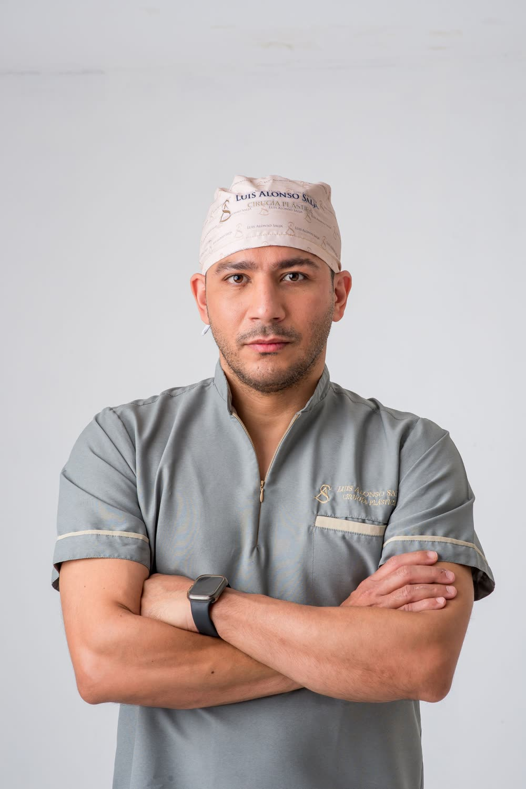
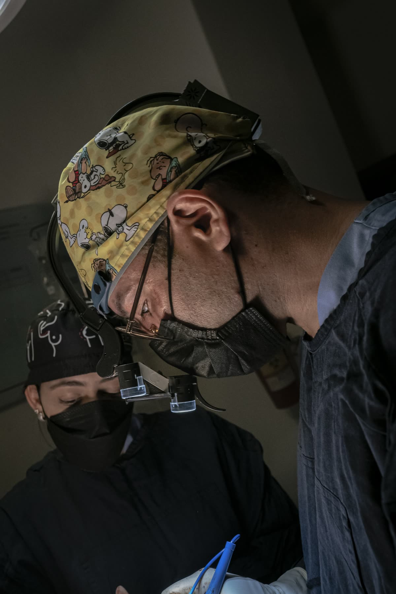
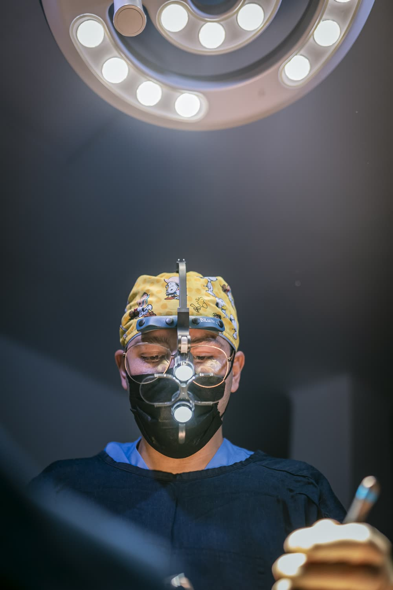
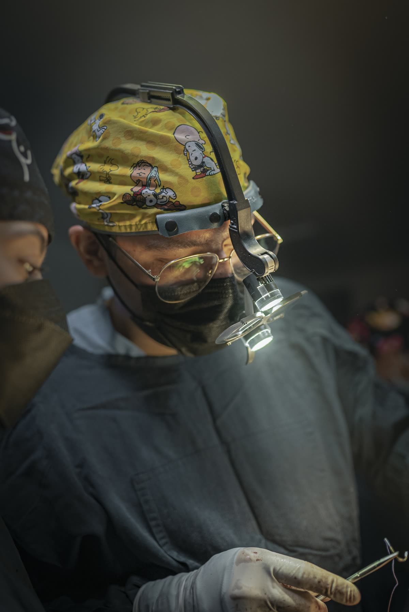
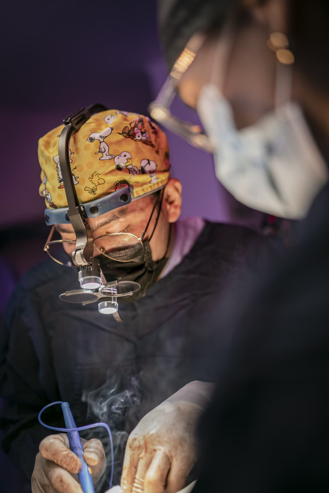
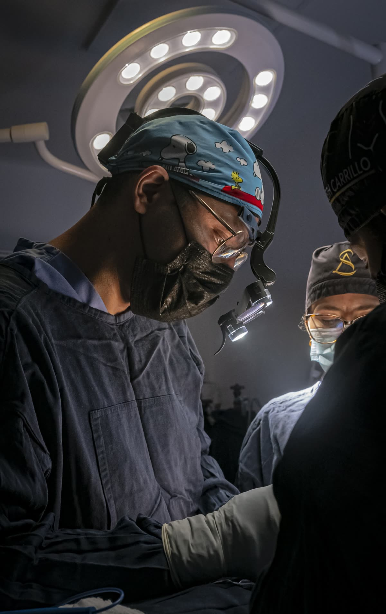
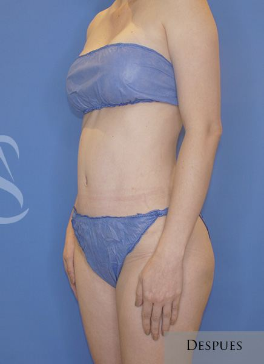
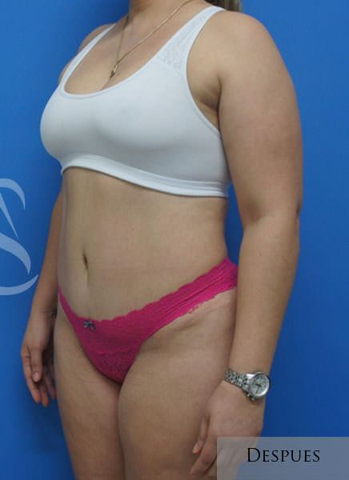
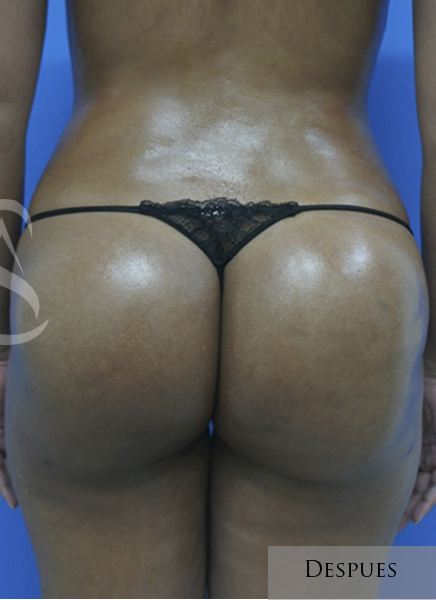

Encuentra el tratamiento ideal para ti.
Cada transformación comienza con una valoración personalizada y un plan diseñado exclusivamente para ti.
Agenda tu cita
Transforma tu imagen con confianza
Procedimientos personalizados con tecnología avanzada y resultados que realzan tu mejor versión. Cada detalle pensado para ti.

Estética mamariaMamoplastia de aumento
La mamoplastia de aumento permite aumentar el volumen de los senos y mejorar su forma mediante implantes de última generación, proporcionando resultados naturales, equilibrados y acordes con la anatomía de cada paciente.
Ver procedimiento
Estética mamariaTransferencia de grasa a senos
La transferencia de grasa a senos utiliza tejido de la propia paciente para aumentar el volumen y mejorar el contorno de forma natural, proporcionando resultados armónicos, equilibrados y acordes con la anatomía de cada paciente.
Ver procedimiento
Estética mamariaReducción mamaria
La reducción mamaria permite disminuir el exceso de tejido mamario y remodelar los senos para conseguir una silueta más cómoda, aliviar las molestias ocasionadas por su exceso de volumen y mejorar la armonía corporal.
Ver procedimiento
Estética mamariaExplantación mamaria
La explantación mamaria permite retirar los implantes de forma segura y restaurar una apariencia más natural, respetando la anatomía de cada paciente y priorizando siempre su bienestar, comodidad y equilibrio estético.
Ver procedimiento
Estética mamariaLevantamiento de senos
La mastopexia permite elevar y remodelar los senos para recuperar su firmeza y posición, logrando una apariencia más armónica, juvenil y natural, respetando las proporciones de cada paciente.
Ver procedimiento
Contorno corporalAbdominoplastia
La abdominoplastia es un procedimiento que elimina el exceso de piel y grasa del abdomen, fortalece la pared abdominal y redefine el contorno corporal para lograr una silueta más firme, armónica y natural.
Ver procedimiento
Contorno corporalLiposucción
La liposucción elimina depósitos de grasa localizada para remodelar el contorno corporal y definir la silueta, logrando resultados naturales, equilibrados y acordes con la anatomía de cada paciente.
Ver procedimiento
Contorno corporalTransferencia de grasa a glúteos
La transferencia de grasa a glúteos combina liposucción y remodelación corporal para aumentar el volumen y mejorar la forma de los glúteos utilizando la propia grasa del paciente.
Ver procedimiento Contorno corporal
Contorno corporalRetracción de piel y contorno corporal
La retracción de piel mejora la firmeza y definición del contorno corporal mediante tecnologías avanzadas, favoreciendo una piel más firme y resultados naturales, armónicos y duraderos.
Ver procedimientoRecuperación
Un plan personalizado y seguimiento cercano en cada etapa.
Primeras 48 horas
Las primeras horas estarán orientadas a controlar la inflamación, favorecer el descanso y comenzar con una recuperación segura. Nuestro equipo estará disponible para resolver tus dudas en cada paso.
Primera y segunda semana
Es normal presentar inflamación y molestias leves. Poco a poco podrás retomar actividades cotidianas siguiendo las indicaciones médicas, respetando siempre los tiempos de cicatrización de tu cuerpo.
Actividades físicas restringidas 4–6 semanas, individualizadas por caso.
Seguimiento personalizado
La cirugía es solo el comienzo. Te acompañamos durante todo el proceso con seguimiento médico cercano, indicaciones precisas y el respaldo de un equipo comprometido con tu bienestar y resultados óptimos.
¿No sabes cuál es el procedimiento ideal para ti?
Cada transformación comienza con una valoración personalizada y un plan diseñado exclusivamente para ti.